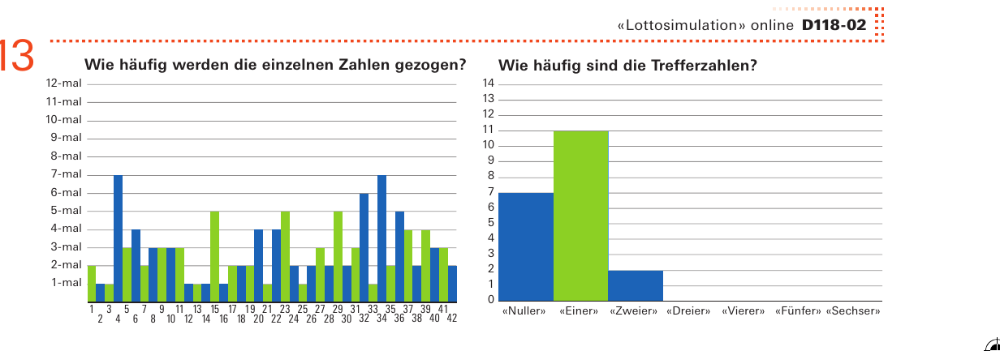
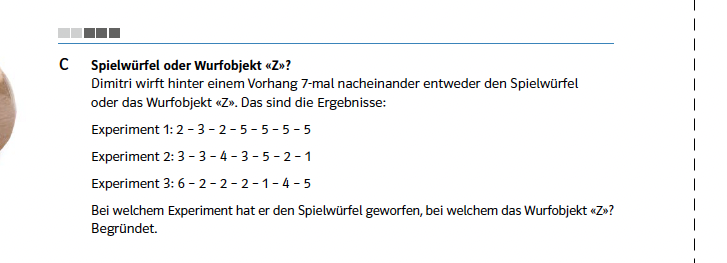
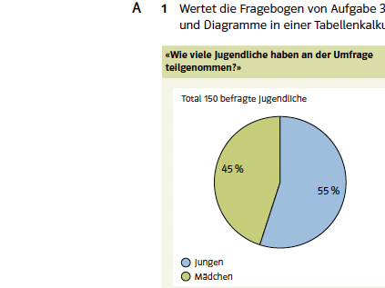

Bezug zur SchulpraxisFragen ohne Werkzeug
Drei Fragen stehen im Zentrum dieses Kapitels. Wie stark schwankt eine Häufigkeit, und ab wann ist eine Abweichung auffällig? Welches von zwei Modellen passt zu einer Beobachtung? Und wie viele Daten braucht es für eine belastbare Aussage?
Alle drei werden in den Lehrmitteln der Sekundarstufe I gestellt – wörtlich, in Aufgabentexten, die Sie gleich sehen werden. Beantworten lässt sich dort keine davon.
Das ist der Unterschied zu den bisherigen Kapiteln. Dort ging es darum, Situationen zu beschreiben und Wahrscheinlichkeiten zu bestimmen die Mittel dazu waren im Unterricht in irgendeiner Form vorhanden. Hier entstehen zum ersten Mal Werkzeuge, für die es keine schulische Entsprechung gibt: Die Approximation durch eine Glockenkurve kommt nicht vor, ebenso wenig Annahmebereich oder Konfidenzintervall. Was vorkommt, sind die Fragen.

Quelle: mathbu.ch 3, LU 18, Aufgabe 13, S. 61
Die Glockenkurve
Damit eine Binomialverteilung ihre charakteristische Form zeigt, braucht es hinreichend viele Versuche. Genau daran fehlt es – nicht an Würfen überhaupt, sondern an der Kettenlänge: Wo nach einer Trefferzahl gefragt wird, besteht die Kette aus zwei, drei oder vier Gliedern, gelegentlich aus sechs. Beim Wurfobjekt werden zwar hundertmal geworfen, aber gezählt wird nicht, wie oft ein bestimmter Ausgang eintritt, sondern es entsteht eine Tabelle mit sechs relativen Häufigkeiten.
Eine einzige Stelle bildet die Ausnahme:
Das rechte der beiden Diagramme zeigt, wie häufig die Trefferzahlen auftreten – von «Nuller»\ bis «Sechser». Das ist eine Binomialverteilung, und sie ist die einzige, die in den betrachteten Lernumgebungen gezeichnet wird.
Teilaufgabe A fragt zudem, welche Zahl am häufigsten gezogen wird und wie oft etwa. Die naheliegende Antwort «etwa dreimal»\ ist falsch: Gefragt ist nicht ein einzelner Zähler, sondern das Maximum von $42$ Zählern, und das liegt typischerweise bei sechs bis sieben. Genau dieser Unterschied nährt die Überzeugung, manche Lottozahlen seien «heiss».

Quelle: Mathbuch 2 (überarbeitete Ausgabe), Aufgabe 2L5 C, S. 70
Testen
Eine Entscheidung zwischen zwei Modellen verlangt genau eine Aufgabe, und sie steht in beiden Ausgaben:
Halten Sie hier kurz inne. Nach welcher Regel würden Sie entscheiden – und woran würden Sie merken, dass Sie sich geirrt haben?
Antwort anzeigen
Zwei konkurrierende Modelle, sieben Datenpunkte, eine Entscheidung. Was fehlt, ist die Entscheidungsregel: Die Lernenden müssen sie selbst erfinden, verschiedene Gruppen erfinden verschiedene, und dieselben Daten führen zu verschiedenen Urteilen.
Genau genommen ist diese Aufgabe allerdings nicht der Test, den wir behandelt haben. Wir prüfen eine Trefferwahrscheinlichkeit, hier steht eine sechswertige Verteilung gegen eine andere – das ist ein Anpassungstest. Und die sieben Würfe reichen nicht aus: Beim Wurfobjekt sind die mittleren Positionen wahrscheinlicher als die äusseren, was für zwei der drei Reihen spricht sicher ist keine Zuordnung.
Dass die Aufgabe so knapp gehalten ist, hat aber gute Gründe. Bei fünfzig Würfen wäre die Antwort abzulesen, und die Aufgabe verlöre genau das, worauf sie zielt: dass sich die Klasse über die Regel streitet statt über die Daten.

Quelle: Mathbuch 2 (überarbeitete Ausgabe), Aufgabe 2K4 A, S. 63
Schätzen
Die dritte Frage dieses Kapitels lautet, wie viele Beobachtungen man für eine belastbare Aussage braucht. Auch sie wird gestellt, nämlich immer dann, wenn eine Klasse eine eigene Erhebung plant und dabei festlegen muss, wen und wie viele sie befragt.
Das Beispiel arbeitet mit $150$ befragten Jugendlichen – eine Zahl, die realistisch ist und nach der niemand fragt. Bei $150$ Befragten liegt die Unsicherheit eines Prozentwerts bei rund $8$ Prozentpunkten, beim Vergleich zweier Teilgruppen von je etwa $75$ Personen bei rund $11$.
Fazit
Von diesem Kapitel werden Sie im Unterricht am wenigsten wiedersehen – jedenfalls an Werkzeugen. An Fragen begegnet Ihnen alles. Drei Dinge brauchen Sie deshalb.
Erstens ein Kriterium für das Wort «auffällig». Der Auftrag, auf Schwankungen zu achten, lässt sich ohne Schwankungsbreite nicht erfüllen – und ohne sie ist auch nicht zu erklären, warum manche Lottozahlen «heiss»\ wirken.
Zweitens den Blick dafür, dass eine Entscheidungsregel vor den Daten festzulegen ist. Dass eine Aufgabe sie nicht liefert, ist kein Mangel – sie soll ja gefunden werden. Aber jemand im Raum muss wissen, dass es eine braucht.
Und drittens die Fähigkeit, Zahlen aus Erhebungen einzuordnen. Ob ein Unterschied in einer Grafik etwas bedeutet, hängt vom Stichprobenumfang ab. Wenn eine Klasse ihre eigene Umfrage auswertet und stolz einen Unterschied von fünf Prozentpunkten präsentiert, sind Sie die einzige Person im Raum, die weiss, dass da keiner ist.